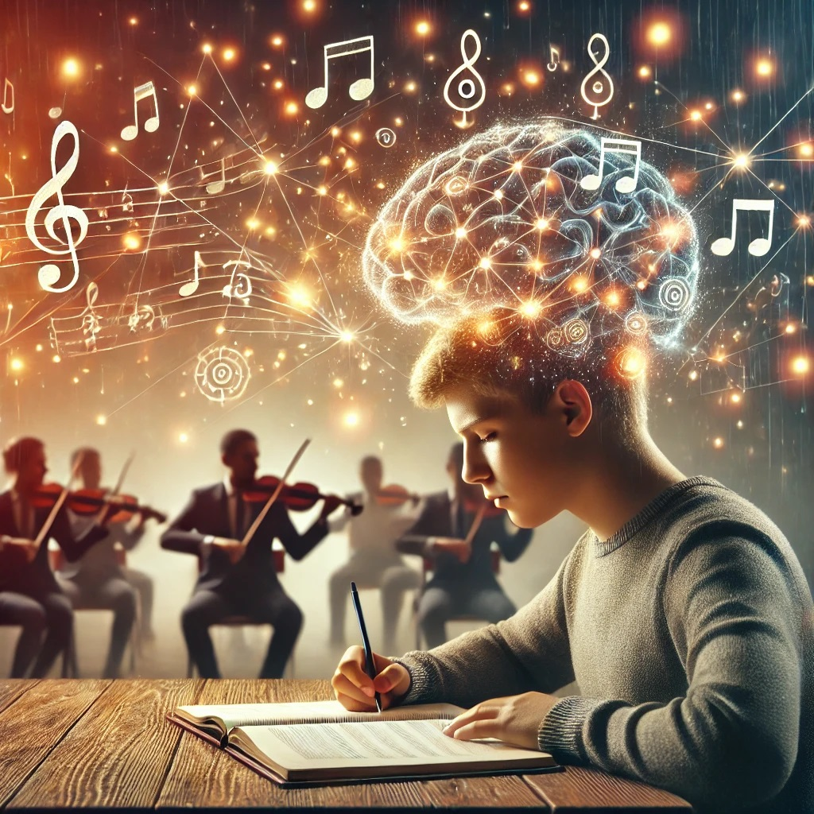

منتشر شده در: ۲۰ اسفند ۱۴۰۳
موسیقی کلاسیک از دیرباز به عنوان یکی از عوامل تأثیرگذار بر ذهن و تمرکز شناخته شده است. بسیاری از مطالعات نشان دادهاند که گوش دادن به موسیقی کلاسیک میتواند عملکرد ذهنی را بهبود بخشد و یادگیری را تسهیل کند.
موسیقی کلاسیک، به ویژه آثار آهنگسازانی مانند بتهوون، موتسارت و باخ، ریتمهای هماهنگ و ملودیهای آرامی دارد که به کاهش استرس و افزایش تمرکز کمک میکند.
برخی مطالعات نشان دادهاند که دانشآموزانی که هنگام مطالعه موسیقی کلاسیک گوش میدهند، اطلاعات را بهتر به خاطر میسپارند و کارایی ذهنی بالاتری دارند.
بازگشت به وبلاگ